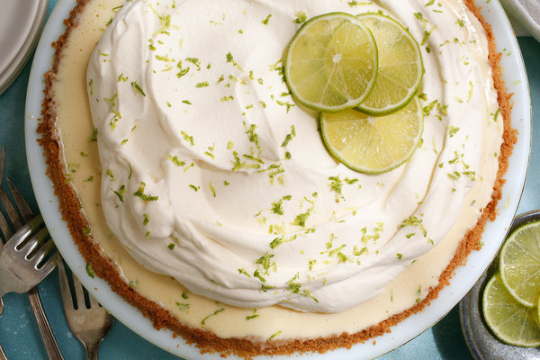

Key Lime Pie
Bring a slice of the Florida Keys to your kitchen.
If you take a dive through the five seasons of
Martha Stewart Cooking School you'll be familiar with this one.

Ingredients
- 11 cups of grahm cracker crumbs
- 6 tablespoons unstalted butter, melted and cooled
- 5 tablesoons sugar
- 1/2 cup freshly squeezed key lime juice
- 1 tablesoon grated key lime zest
- 11 cups of heavy cream, chilled
- 1 can (14 ounces) sweetened condensed milk
- 4 large egg yolks
Directions
Step 1
- Heat oven to 375 degrees.
- Combine grahan cracker crumbs, butter and 3 tablespoons sugar in medium
bowl; mix well.
- Press into a 9 inch plate and bake until lightly
browned, about 12 minutes.
- Remove from oven and transfer to wire rack until completely
cooled
Step 2
- Lower oven to 325 degrees.
- In a medium bowl, gently whisk together condensed milk, egg yolks, key lime juice, and
zest.
- Pour into prepared, cooled crust.
Step 3
- Return pie to oven, and bake until center is set but still
quivers when the pan is nudged. (About 15-17 minutes)
- Let cool completely on a wire rack.
Step Four
- Shortly before serving, combine cream and remaining
2 tablespoons sugar in the bowl of an electric mixer
fitted with a whick attachment.
- Whisk on medium speed until soft peaks form. (About 2-3 minutes)
- Spoon over cooled pie, garnish with zest.
Return to Home